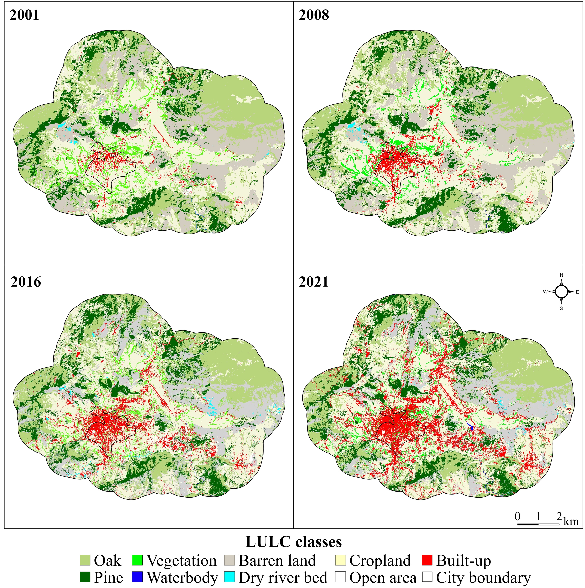

Spatio-temporal LULC assessment
Land use and land cover change mapped across Dharamshala and Pithoragarh (2002–2021)
The Planning Challenge
Mountain cities in the Western Himalaya are growing fast, and mostly without a mapped plan. Road corridors, drainage networks, forest buffer zones, and settlement boundaries are routinely planned without knowing what the land looked like five years ago, let alone twenty.
The result? Cropland converted to concrete on slopes that flood. Forest patches severed with no record of the green infrastructure that just disappeared. Infrastructure built where the terrain says otherwise.
The data gap is worst for medium-sized towns, exactly where most of South Asia’s future urbanisation will land. Large cities get studied. Hill stations and border towns do not.
This project put two of those towns on the map, in detail, over two decades, using open-access satellite data, to support evidence-based planning in mountain landscapes. —
What Was Done
Two rapidly growing Himalayan towns were selected because they grow differently and are governed differently, making the findings transferable beyond a single case:
- Dharamshala, Himachal Pradesh. A tourism hub and India’s first Smart City in its state, growing linearly along road corridors up the valley.
- Pithoragarh, Uttarakhand. A border district headquarters spreading radially across the Saur valley, constrained by steep ridgelines on multiple sides.
Satellite imagery was captured at four time points across two decades and classified into 12 land cover classes. Not just “built” and “green”, but Deodar, Oak, Pine, Mixed Forest, Glaciated Region, Cropland, Dry River Bed, and more. That level of detail matters: a planner designing a forest buffer needs to know whether they are protecting Deodar or Pine, not just “trees.”
Classification accuracy was independently validated at 89–95% across all time points.
Tools: Google Earth Engine, ArcGIS, QGIS, ENVI, CARTOSAT-DEM
Maps


In Dharamshala (left), red built-up patches expand steadily from the valley floor upward, concentrated along road corridors, replacing cropland and fragmenting the Oak and Mixed Forest patches on the mid-slopes. In Pithoragarh (right), the city core from 2001 is barely visible. By 2021, built-up land has spread in every direction across the Saur valley. The Oak and Pine forest at the outer edge stays comparatively intact, a visible sign of reserved forest protection holding the line where municipal planning has not. —
What the Data Shows
- Built-up land nearly doubled in Dharamshala (+104%) and increased almost fivefold in Pithoragarh (+387%) over twenty years.
- In both cities, cropland went first. The agricultural buffer between towns and forests was the primary casualty of expansion.
- Dharamshala lost 17% of its cropland, 2% of vegetation, and 1% of forest cover. Pithoragarh lost 15% of cropland, 11% of vegetation, and 15% of forest.
- Growth accelerated sharply in the second decade, triggered by Smart City investment, road expansion, and tourism infrastructure.
- The two cities grew in fundamentally different shapes. Dharamshala spread outward in multiple disconnected clusters. Pithoragarh expanded as a single continuous core, absorbing surrounding land in every direction.
Growth morphology diverged by topography
- Pithoragarh evolved as a single-core expansion, with built-up patches connecting and aggregating in all directions from the city centre as an continuous, radial sprawl pattern.
- Dharamshala exhibited multi-core network expansion : with scattered newer built-up patches emerging beyond city limits, particularly in the western direction, interlaced with cropland and forest fragments.
What Planners Can Do With This
This study produces decision-ready spatial intelligence across following planning domains:
Set urban growth boundaries on actual evidence A 20-year land conversion record shows exactly where growth pressure is highest and which zones are next in line. That is the evidence base a masterplan revision actually needs, rather than arbitrary buffers drawn on administrative maps.
Protect the right forest patches Species-level maps show not just how much forest has been lost, but which types and where. Deodar, Pine, Oak, mixed types: each has different ecological value and different legal standing under India’s Forest Conservation Act. The accelerating forest loss during Dharamshala’s high-growth decade is an early warning that corridor protection needs to happen before the next infrastructure cycle, not after.
Screen for disaster risk before permits are issued Cropland converted to built-up on steep Himalayan slopes is a reliable predictor of landslide and flood risk. Overlaying these change maps with slope and drainage data creates a spatial risk screen that can sit inside any permitting workflow, shifting from reactive response after a disaster to pre-screening before construction begins.
Make ecosystem service trade-offs visible Species-level forest data and cropland loss estimates feed directly into carbon sequestration, flood regulation, local climate regulation, and soil erosion models (see the Ecosystem Services project). These maps give planners and EIA teams the spatial inputs to make trade-offs explicit rather than invisible in impact assessments and municipal SDG reporting.
Publications
- Sharma, S., Joshi, P.K., and Fürst, C. (2022). Exploring multiscale influence of urban growth on landscape patterns of two emerging urban centres in the Western Himalaya. Land, 11, 2281. https://doi.org/10.3390/land11122281